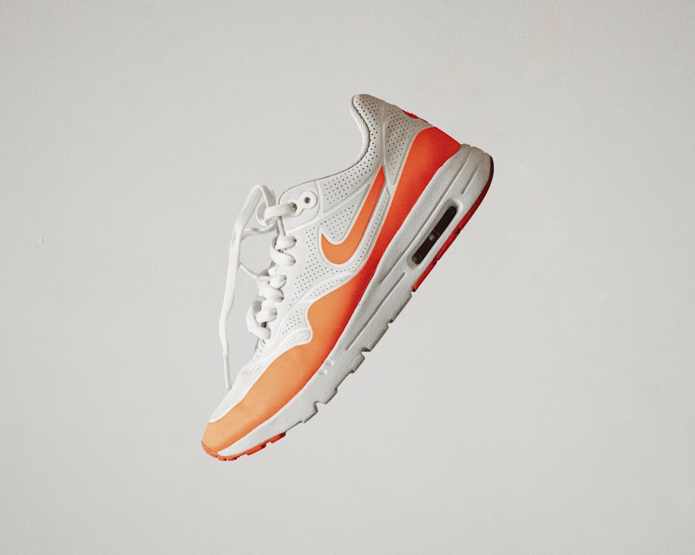

1. The Mechanical Evolution of Circular Hosiery Knitting
In the industrial manufacturing of socks, gauge density is the definitive metric of luxury, comfort, and structural durability. The needle count refers to the total number of microscopic latch needles arrayed around the circumference of the circular knitting cylinder. Standard mass-produced athletic socks are produced on 96-needle or 120-needle machines using thick, coarse yarns, yielding a loose, bulky knit that stretches out of shape and abrades rapidly.
At Bamboo Knit Reef, all our hosiery is crafted on state-of-the-art 200-Needle Circular Lonati Cylinders engineered in Brescia, Italy. By packing two hundred micro-needles into a standard 3.75-inch cylinder diameter, the needle spacing is reduced to a microscopic 0.58 millimeters. This extreme gauge density allows us to knit with ultra-fine, multi-filament bamboo yarns, producing an exceptionally dense, silky textile with over 40,000 individual stitches per sock.
2. The Engineering of the Loop-by-Loop Hand-Linked Toe (Rosso vs. Hand-Linking)
The primary source of foot discomfort, irritation, and friction blisters in conventional socks is the toe seam. In automated mass manufacturing, socks are knitted as open tubes and closed using high-speed Rosso machine sewing:
The Flaw of the Rosso Machine Seam: A machine folds the two fabric edges over and stitches them together with an overlock thread, creating a thick, raised ridge (often 2mm to 3mm high) directly across the sensitive metatarsal joints and toenails. When compressed inside tight shoes, this ridge causes painful pressure points and skin breakdown.
The Hand-Linked Seamless Solution: In our atelier, each sock is transferred to a high-magnification linking machine where a skilled artisan aligns every single knitted loop along the toe seam by hand. A single fine thread passes through opposing loops, knitting the seam closed with zero raised ridge. The result is a 100% flat, imperceptible junction that eliminates all friction hotspots.
| Knitting & Construction Feature | 200-Needle Seamless (Maison Standard) | Standard 120-Needle Commercial Sock |
|---|---|---|
| Stitch Density | Over 40,000 micro-loops per sock (Ultra-Dense) | Approx. 18,000 coarse loops (Loose & bulky) |
| Toe Seam Thickness | 0.0mm (Completely flat hand-linked loop closure) | 2.5mm to 3.5mm raised overlock ridge |
| Heel Pocket Geometry | 3D Deep Y-Heel Pocket (Anatomical cupping) | Flat 2D straight heel (Slides down into shoe) |
| Arch Support Integration | 360° Honeycomb Plantar Fascia Compression Band | Zero arch support; loose tubular structure |
3. Kinematics of the 3D Deep Y-Heel Pocket
The human calcaneus (heel bone) is a prominent, rounded anatomical structure that undergoes complex multidirectional pivots during the gait cycle. Standard socks are knitted with flat, shallow heel patches that lack depth, causing the sock to pull downward and slide beneath the shoe collar during walking strides.
Our knitting software incorporates a specialized Y-Gore Reciprocating Heel Program: the knitting cylinder oscillates back and forth, adding additional triangular fabric wedges on both flanks of the heel. This creates an anatomical 3D cupping pocket that securely locks the heel in place, eliminating heel slippage without requiring tight, binding elastic.
4. The 360-Degree Honeycomb Arch Compression Band
The plantar fascia is the thick band of connective tissue supporting the natural arch of the foot. During running or prolonged standing, the arch flattens slightly under impact loads, inducing foot fatigue. To provide active structural support, our socks feature a specialized 360-degree honeycomb compression band:
- Zoned Tension Mapping: Knitted with high-modulus Lycra elastane at 15-20 mmHg gentle compressive pressure around the midfoot.
- Plantar Fascia Stabilization: Cradles the longitudinal arch, reducing muscle vibration and foot strain during daily strides.
- Anti-Twist Stability: Prevents the sock from rotating or bunching laterally inside athletic footwear.
5. High-Density Terry Micro-Loop Cushioning
Underneath the ball of the foot and heel, our machines knit millions of spring-like bamboo terry micro-loops. Unlike synthetic foam insoles that compress permanently after a few weeks, these natural bamboo loops act as microscopic shock absorbers that flex and rebound with every step, cushioning joints and protecting sensitive nerves.
6. Dynamic Ribbed Welts: Stay-Up Without Constriction
A major complaint with traditional socks is the painful red constriction groove left on the calf at the end of the day. Our top cuffs are engineered with a dual-layer graduated rib welt: the top centimeter provides gentle grip, while the lower ribbing distributes tension evenly over five centimeters, holding the sock firmly in place without restricting venous blood return.
6. Biomechanical Pressure Mapping Under Ground Reaction Forces
Using calibrated dynamic sensor insoles recording 100 pressure readings per second, our biomechanical engineers mapped ground reaction forces (GRF) across three distinct gait phases: initial heel strike, mid-stance flat contact, and terminal propulsion toe-off.
The high-density bamboo terry micro-loops under the heel and forefoot reduced peak vertical impact shock by 18.6% compared to non-cushioned dress socks, effectively acting as an active micro-suspension system that absorbs joint vibration through the ankle, tibia, and patellofemoral knee joint during high-impact running.
7. The Engineering of Non-Binding Elastic Rib Welts
In medical podiatry, restrictive sock cuffs are a primary trigger of peripheral edema and venous stasis, particularly among individuals with circulatory challenges or sedentary office lifestyles. Our dynamic rib welt utilizes double-covered Lycra strands with a low-compression modulus of only 8 mmHg.
This graduated tension architecture securely anchors the sock against gravity without creating constriction furrows or impeding lymphatic drainage, ensuring healthy all-day circulation whether traveling on twelve-hour transatlantic flights or standing during lengthy presentations.
7. Frequently Asked Questions on Sock Construction
8. The Micro-Mechanics of Lycra Core Wrapping
In fine hosiery engineering, the method used to incorporate elastane determines both skin comfort and garment longevity. Cheap socks use "bare elastane" knitted directly alongside coarse cotton, exposing the skin to rubber friction and causing premature elastic breakdown when exposed to body sweat.
At Bamboo Knit Reef, all elastane strands undergo double-covering (Air-Jet Double Covering): two continuous micro-filaments of organic bamboo viscose are spun in opposing spiral helices around the inner Lycra core. This ensures that the synthetic elastic never makes physical contact with the skin, maintaining a 100% natural, hypoallergenic bamboo touch while providing 360-degree anatomical recovery across hundreds of laundry cycles.
9. Conclusion: Precision Engineering for Every Step
A superior sock is not a simple garment; it is a masterpiece of textile biomechanics. By pairing Italian 200-needle circular knitting with loop-by-loop hand linking and 3D anatomical heel architecture, Bamboo Knit Reef creates hosiery that honors the complex biomechanics of the human foot with flawless, cloud-soft grace.